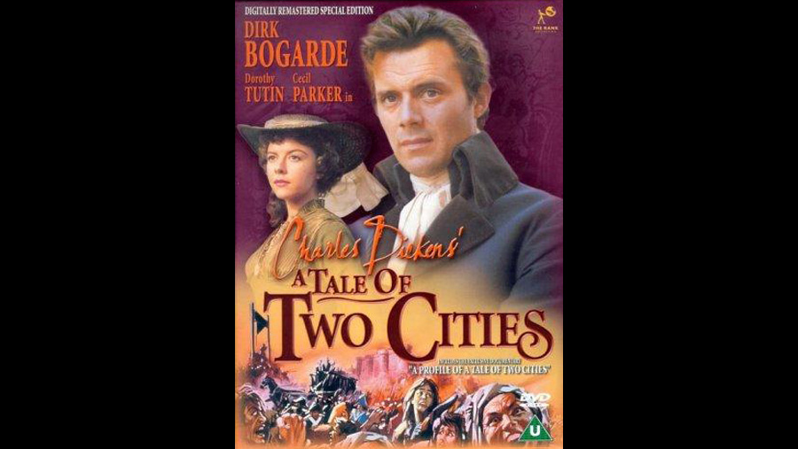

1958

CAST
Sydney Carton
-
Dirk Bogarde
Charles Darnay
-
Paul Guers
Lucie Manette
-
Dorothy Tutin
Jarvis Lorry
-
Cecil Parker
Dr. Alexandre Manette
-
Stephen Murray
Miss Pross
-
Athene Seyler
Madame Defarge
-
Rosalie Crutchley
Monsieur Defarge
-
Duncan Lamont
'The Vengeance'
-
Freda Jackson
C J Stryver
-
Ernest Clark
Jeremiah 'Jerry' Cruncher
-
Alfie Bass
John Barsad
-
Donald Pleasence
Sawyer
-
Eric Pohlmann
Gabelle
-
Ian Bannen
Marie Gabelle
-
Marie Versini
Peasant
-
Chris Adcock (uncredited)
Peasant Girl
-
Dominique Boschero (uncredited)
Foulon
-
Yves Brainville (uncredited)
Citizen
-
Chick Fowles (uncredited)
Marquis St-Evrémonde
-
Christopher Lee
Grave Robber
-
Danny Green (uncredited)
Attorney General
-
Leo McKern
Gaspard
-
Sacha Pitoëff (uncredited)
Tom, Coach Driver
-
Michael Brennan (uncredited)
President of Tribunal
-
Laurence Payne (uncredited)
Mellor
-
Peter Copley (uncredited)
Jailer
-
Harold Kasket (uncredited)
Peasant
-
Frederick Kelsey (uncredited)
Roger Cly
-
George Rose (uncredited)
Joe, Coach Guard
-
Sam Kydd (uncredited)
Prisoner
-
Dido Plumb (uncredited)
Foreman of Jury
-
Robert Rietty (uncredited)
Man in Defarge's
-
Reg Thomason (uncredited)
Grave Robber
-
Alan Tilvern (uncredited)
Stable Boy
-
Ian Whittaker (uncredited)
Dover Innkeeper
-
George Woodbridge (uncredited)
CREATIVE TEAM
Director
-
Ralph Thomas
Screenplay
-
T.E.B. Clarke